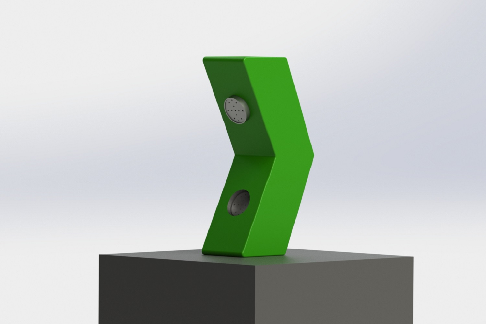
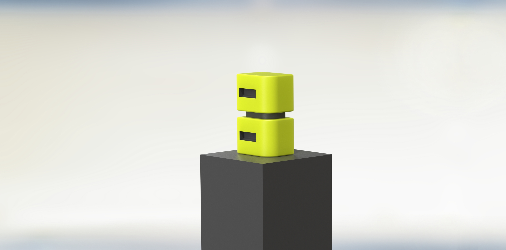
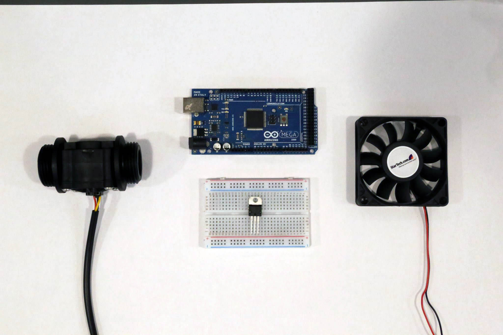

Summary of the week
//in progress//
Design of the Breathing Machine
The first idea is to make a one body device that reminds a bit of an old cellular phone. It would only have two shapes standing out: the breath-in sensor and the blow out actuator. Would it be immediate to understand where you are supposed to blow in?
The second design draft shows a separate input/output body. Is a separation necessary?
Technical Prototype
Input
A flux sensor will be used as an input (left side on the picture below) // then replaced with a bend sensor.
Processing
Arduino + breadboard for amplyfying the circuit to 12V (middle of the picture below).
Output
A two-wires computer fan. It had three actually, but the third one is just to feedback to the computer the speed of it. tutorial on how to operate the fan through PMW.
The first prototype of the breathing machine is actually quite boring and simple, but I just needed to test its technical fesibility quite quickly. Instead of using the flux sensor I opted for a bend sensor. I did not manage to get analog values out of the flow rate sensor.
Tutorial Jess + Yuri
. find a scenario, that could later inform you on the quality of the aesthetics of these robots;
. build as many as you can;
. done a lot recently, so be careful not to end up in cliches;
Interesting Projects to look at below.
Tutorial Ruairi
. in the future might end up designing a bunch of tools (like pick'nplace) that you can mount on top of a robotic arm;
. for now produce more object, their aesthetics is less relevant;
. think of a context, a little bit;
Relevant projects and people listed below:
. Ian Ingram makes machines inspired by animal behaviours;
. Guy Hoffman is a great human-robot interactioner;
. Timid Robot;
. Simone Giertz makes silly machines;
Tutorial Fiona
. focus of the design project? are you gonna talk about onthology? sociology? empathy?
. Read The Companion Species Manifesto: Dogs, People and Significant Otherness